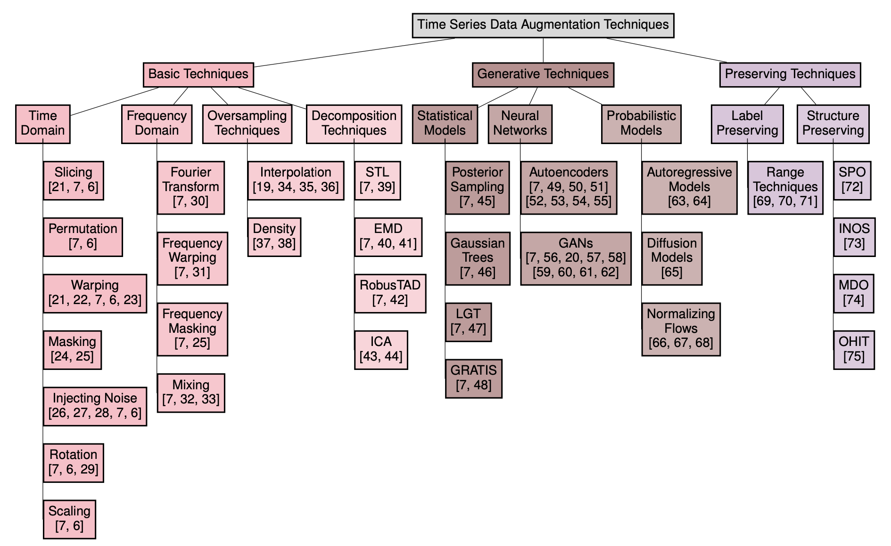
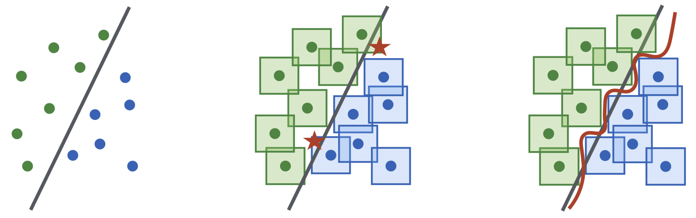

🎓 I successfully defended my Ph.D. in May 2025.
My thesis was conducted jointly between the LIPADE Research Lab (Université Paris Cité) and the Noah's Ark Lab in Paris.
I joined Meta as a Research Scientist in September 2025 (London), working on long-horizon optimization, planning, and reliability of large-scale ML systems under delayed and noisy feedback..
I am currently a Research Scientist at Meta, working on representation learning, transformers, and long-horizon optimization and planning for large-scale machine learning systems, with a particular focus on reliability, robustness, calibration, and learning under delayed and noisy feedback. I hold an engineering diploma in Data Science, Statistics, and Machine Learning from ENSAE and a Master’s degree in Machine Learning from École Polytechnique. I completed my PhD in a CIFRE program jointly between the LIPADE laboratory (Université Paris Cité) and the Noah’s Ark Lab at Huawei, under the supervision of Ievgen Redko and Themis Palpanas. During the first part of my PhD, I was embedded in a business-oriented research team, and part of my work could not be published due to data confidentiality and contractual constraints. This explains why most of my publications appear in the second half of the PhD. My research focuses on time series modeling, with an emphasis on representation learning, forecasting, and classification. Early in my PhD, I worked on data augmentation and synthetic generation for time series. I then studied adversarial attacks and defenses for time series models, before focusing on the optimization and generalization limits of transformers for long-term forecasting. This led to the development of SAMformer, a lightweight sharpness-aware transformer for time series forecasting, which achieved state-of-the-art performance and was accepted as an oral presentation at ICML 2024 (≈ top 1%). I also developed a theoretical and algorithmic framework based on random matrix theory and multi-task learning, leading to a Spotlight paper at NeurIPS 2024 (≈ top 2%). More recently, I have been working on foundation models for time series classification, leading to Mantis, an open-source foundation model that is now adopted by the community and downloaded tens of thousands of times per month on HuggingFace. While most of my work has focused on time series, my research interests and methods naturally extend to other modalities such as vision and language, especially in the context of large models, representation learning, and optimization. In total, I have authored several papers in top-tier venues including ICML and NeurIPS, which are listed below.
In recent years, there has been increasing interest in developing foundation models for time series data that can generalize across diverse downstream tasks. While numerous forecasting-oriented foundation models have been introduced, there is a notable scarcity of models tailored for time series classification. To address this gap, we present Mantis, a new open-source foundation model for time series classification based on the Vision Transformer (ViT) architecture that has been pre-trained using a contrastive learning approach. Our experimental results show that Mantis outperforms existing foundation models both when the backbone is frozen and when fine-tuned, while achieving the lowest calibration error. In addition, we propose several adapters to handle the multivariate setting, reducing memory requirements and modeling channel interdependence.
We present a novel approach to multivariate time series forecasting by framing it as a multi-task learning problem. We propose an optimization strategy that enhances single-channel predictions by leveraging information across multiple channels. Our framework offers a closed-form solution for linear models and connects forecasting performance to key statistical properties using advanced analytical tools. Empirical results on both synthetic and real-world datasets demonstrate that integrating our method into training loss functions significantly improves univariate models by effectively utilizing multivariate data within a multi-task learning framework.
Foundation models, while highly effective, are often resource-intensive, requiring substantial inference time and memory. This paper addresses the challenge of making these models more accessible with limited computational resources by exploring dimensionality reduction techniques. Our goal is to enable users to run large pre-trained foundation models on standard GPUs without sacrificing performance. We investigate classical methods such as Principal Component Analysis alongside neural network-based adapters, aiming to reduce the dimensionality of multivariate time series data while preserving key features. Our experiments show up to a 10x speedup compared to the baseline model, without performance degradation, and enable up to 4.5x more datasets to fit on a single GPU, paving the way for more user-friendly and scalable foundation models.
In this paper, we introduce a novel theoretical framework for multi-task regression, applying random matrix theory to provide precise performance estimations, under high-dimensional, non-Gaussian data distributions. We formulate a multi-task optimization problem as a regularization technique to enable single-task models to leverage multi-task learning information. We derive a closed-form solution for multi-task optimization in the context of linear models. Our analysis provides valuable insights by linking the multi-task learning performance to various model statistics such as raw data covariances, signal-generating hyperplanes, noise levels, as well as the size and number of datasets. We finally propose a consistent estimation of training and testing errors, thereby offering a robust foundation for hyperparameter optimization in multi-task regression scenarios. Experimental validations on both synthetic and real-world datasets in regression and multivariate time series forecasting demonstrate improvements on univariate models, incorporating our method into the training loss and thus leveraging multivariate information.
@inproceedings{
ilbert2024samformer,
title={{SAM}former: Unlocking the Potential of Transformers in Time Series Forecasting with Sharpness-Aware Minimization and Channel-Wise Attention},
author={Romain Ilbert and Ambroise Odonnat and Vasilii Feofanov and Aladin Virmaux and Giuseppe Paolo and Themis Palpanas and Ievgen Redko},
booktitle={Forty-first International Conference on Machine Learning},
year={2024},
url={https://openreview.net/forum?id=8kLzL5QBh2}
}
Transformer-based architectures achieved breakthrough performance in natural language processing and computer vision, yet they remain inferior to simpler linear baselines in multivariate long-term forecasting. To better understand this phenomenon, we start by studying a toy linear forecasting problem for which we show that transformers are incapable of converging to their true solution despite their high expressive power. We further identify the attention of transformers as being responsible for this low generalization capacity. Building upon this insight, we propose a shallow lightweight transformer model that successfully escapes bad local minima when optimized with sharpness-aware optimization. We empirically demonstrate that this result extends to all commonly used real-world multivariate time series datasets. In particular, SAMformer surpasses current state-of-the-art methods and is on par with the biggest foundation model MOIRAI while having significantly fewer parameters. The code is available at https://github.com/romilbert/samformer.

@misc{ilbert2024data,
title={Data Augmentation for Multivariate Time Series Classification: An Experimental Study},
author={Romain Ilbert and Thai V. Hoang and Zonghua Zhang},
year={2024},
eprint={2406.06518},
archivePrefix={arXiv},
primaryClass={id='cs.LG' full_name='Machine Learning' is_active=True alt_name=None in_archive='cs' is_general=False description='Papers on all aspects of machine learning research (supervised, unsupervised, reinforcement learning, bandit problems, and so on) including also robustness, explanation, fairness, and methodology. cs.LG is also an appropriate primary category for applications of machine learning methods.'}
}
}
Our study investigates the impact of data augmentation on the performance of multivariate time series models, focusing on datasets from the UCR archive. Despite the limited size of these datasets, we achieved classification accuracy improvements in 10 out of 13 datasets using the Rocket and InceptionTime models. This highlights the essential role of sufficient data in training effective models, paralleling the advancements seen in computer vision. Our work delves into adapting and applying existing methods in innovative ways to the domain of multivariate time series classification. Our comprehensive exploration of these techniques sets a new standard for addressing data scarcity in time series analysis, emphasizing that diverse augmentation strategies are crucial for unlocking the potential of both traditional and deep learning models. Moreover, by meticulously analyzing and applying a variety of augmentation techniques, we demonstrate that strategic data enrichment can enhance model accuracy. This not only establishes a benchmark for future research in time series analysis but also underscores the importance of adopting varied augmentation approaches to improve model performance in the face of limited data availability.

@inproceedings{10.1145/3605772.3624002,
author = {Ilbert, Romain and Hoang, Thai V. and Zhang, Zonghua and Palpanas, Themis},
title = {Breaking Boundaries: Balancing Performance and Robustness in Deep Wireless Traffic Forecasting},
year = {2023},
isbn = {9798400702655},
publisher = {Association for Computing Machinery},
address = {New York, NY, USA},
url = {https://doi.org/10.1145/3605772.3624002},
doi = {10.1145/3605772.3624002},
abstract = {Balancing the trade-off between accuracy and robustness is a long-standing challenge in time series forecasting. While most of existing robust algorithms have achieved certain suboptimal performance on clean data, sustaining the same performance level in the presence of data perturbations remains extremely hard. In this paper, we study a wide array of perturbation scenarios and propose novel defense mechanisms against adversarial attacks using real-world telecom data. We compare our strategy against two existing adversarial training algorithms under a range of maximal allowed perturbations, defined using ell_infty -norm, in [0.1,0.4]. Our findings reveal that our hybrid strategy, which is composed of a classifier to detect adversarial examples, a denoiser to eliminate noise from the perturbed data samples, and a standard forecaster, achieves the best performance on both clean and perturbed data. Our optimal model can retain up to 92.02\% the performance of the original forecasting model in terms of Mean Squared Error (MSE) on clean data, while being more robust than the standard adversarially trained models on perturbed data. Its MSE is 2.71\texttimes{} and 2.51\texttimes{} lower than those of comparing methods on normal and perturbed data, respectively. In addition, the components of our models can be trained in parallel, resulting in better computational efficiency. Our results indicate that we can optimally balance the trade-off between the performance and robustness of forecasting models by improving the classifier and denoiser, even in the presence of sophisticated and destructive poisoning attacks.},
booktitle = {Proceedings of the 2023 Workshop on Recent Advances in Resilient and Trustworthy ML Systems in Autonomous Networks},
pages = {17–28},
numpages = {12},
keywords = {robustness, poisoning, performance, forecasting, denoising, components, classification},
location = {, Copenhagen, Denmark, },
series = {ARTMAN '23} }
}
Balancing the trade-off between accuracy and robustness is a long-standing challenge in time series forecasting. While most of existing robust algorithms have achieved certain suboptimal performance on clean data, sustaining the same performance level in the presence of data perturbations remains extremely hard. In this paper, we study a wide array of perturbation scenarios and propose novel defense mechanisms against adversarial attacks using real-world telecom data. We compare our strategy against two existing adversarial training algorithms under a range of maximal allowed perturbations, defined using ℓ∞-norm, ∈[0.1,0.4]. Our findings reveal that our hybrid strategy, which is composed of a classifier to detect adversarial examples, a denoiser to eliminate noise from the perturbed data samples, and a standard forecaster, achieves the best performance on both clean and perturbed data. Our optimal model can retain up to 92.02% the performance of the original forecasting model in terms of Mean Squared Error (MSE) on clean data, while being more robust than the standard adversarially trained models on perturbed data. Its MSE is 2.71× and 2.51× lower than those of comparing methods on normal and perturbed data, respectively. In addition, the components of our models can be trained in parallel, resulting in better computational efficiency. Our results indicate that we can optimally balance the trade-off between the performance and robustness of forecasting models by improving the classifier and denoiser, even in the presence of sophisticated and destructive poisoning attacks.